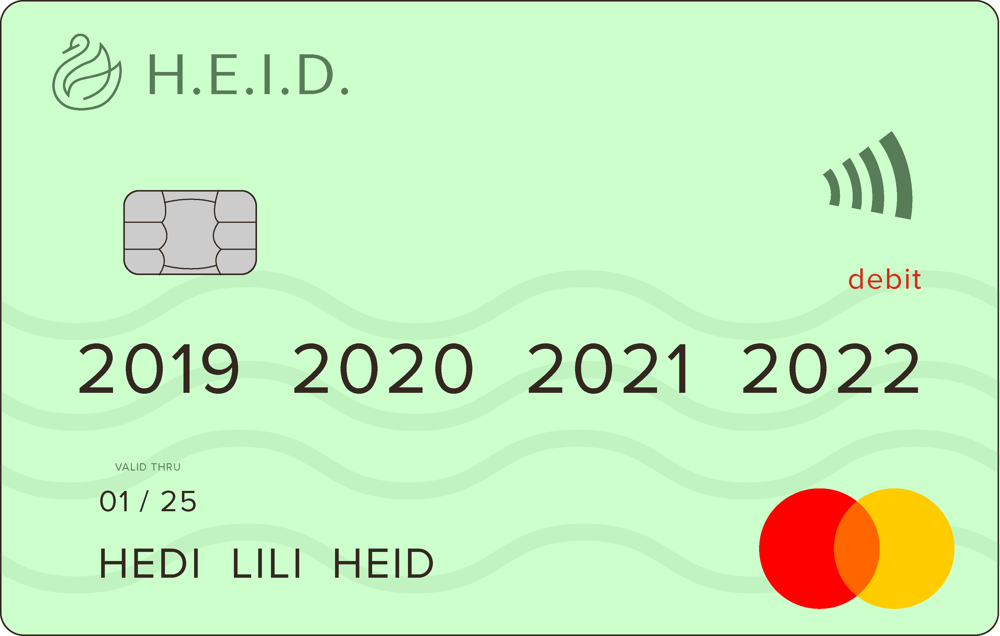

Studying in Denmark > Banking
Banking
Why you need a bank account
After getting your CPR and NemID, you may set up a bank account. You need it to receive your salary and manage taxes.
When you open your bank account you should ask for a Dankort which is a national debit card combined with a Visa card. It may take a while to get it, so ask about it as soon as you can.

How to get it
Step 1
CHOOSE A BANK
Below is the list of some of the Danish banks, you can check their offers and choose which of them suits you. A good idea might also be to ask your fellow students for recommendations. Remember to check the cash withdrawal limit.
Step 2
GATHER DOCUMENTATION
Step 3
APPLY FOR AN ACCOUNT
You can apply for an account by coming to the bank of your choosing. Some banks also offer applying online - you can find about that on their websites.
NemKonto
Is one of your existing bank accounts, on which danish public authorities pay money to. Those payments include:
In order to set a NemKonto, you need to have a NemID. You can contact your Danish bank to chose it as your NemKonto or, if you wish to make you foreign bank account a NemKonto, you can apply through the website in here.
You can read more about NemKonto here.
Go to the next page
'Working in Denmark'